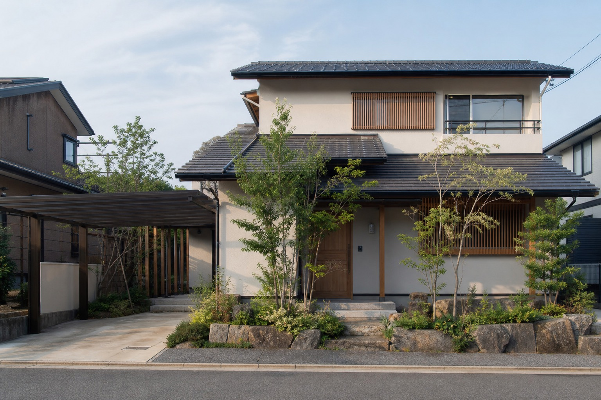
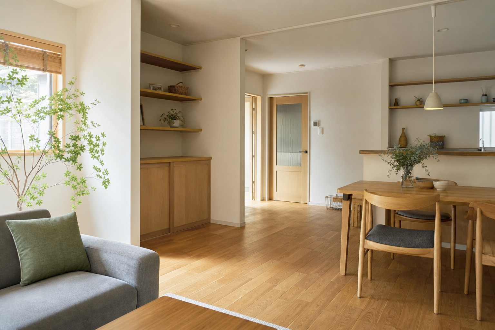
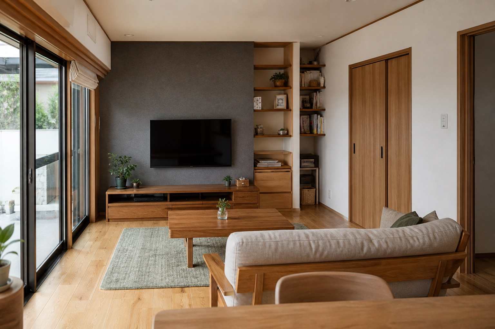
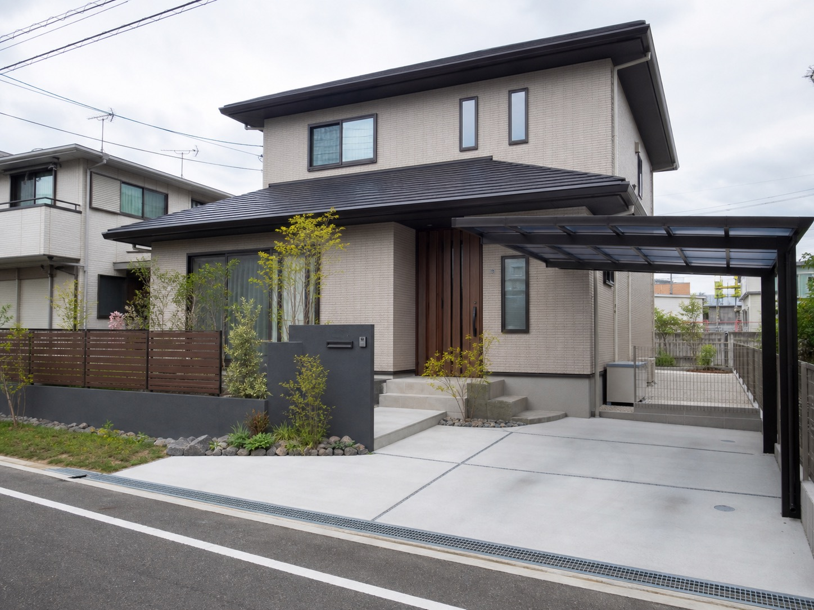
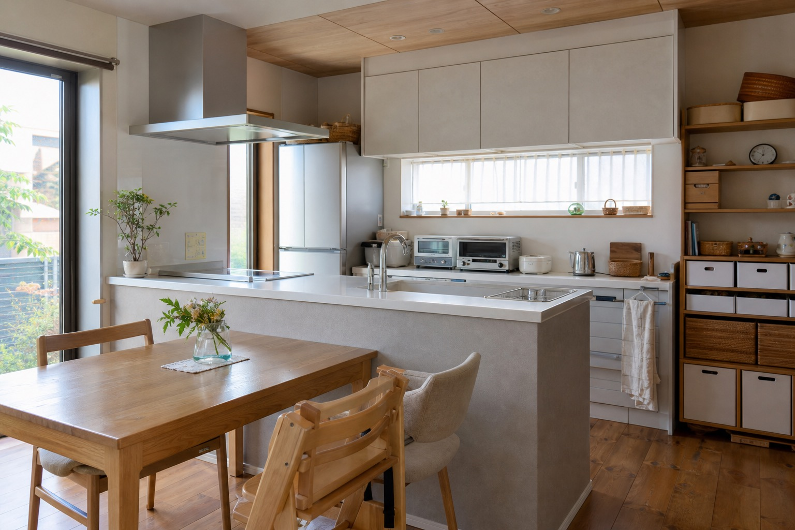

リフォーム・リノベーション
住まいの改修、間取りや内装の見直し、水まわりなど、暮らしに合わせた住空間の相談導線を整理します。

既存サイトでは、住宅・外構・修理を幅広く扱う姿勢が伝わります。デモではその強みを、単なるメニュー一覧ではなく「相談しやすさ」と「住まい全体を見る目」として整理しました。

確認できる範囲のサービスだけを掲載し、未確認の情報は追加していません。
住まいの改修、間取りや内装の見直し、水まわりなど、暮らしに合わせた住空間の相談導線を整理します。
駐車場、アプローチ、門まわり、フェンス、庭まわりなど、外まわりの相談を入口として見つけやすくします。
大きな工事だけでなく、日々の不具合や修繕の相談にもつながる見せ方にしています。
既存サイトで確認できる範囲に留め、詳細仕様や工法は「要確認」として扱います。
小倉南区を拠点にした相談先。所在地を明確に出し、近隣の住まいの相談を受けやすい印象に。
リフォームと外構を一体で見せる。家の内外を分けず、暮らし全体を整える会社として整理。
電話導線を見つけやすく。既存サイトにある電話番号を、ヘッダー・会社概要・最終CTAで自然に配置。
下記は差し替え前提の仮画像です。実在の案件名・実績数・お客様の声は作成していません。



1困りごと・希望を相談
2現地確認・内容整理
3見積・工事範囲を確認
見学会・イベント・SNS・採用情報は既存サイト上で確認できなかったため、このデモでは掲載していません。
公開前には、営業時間・対応エリア・メール表記などの最終確認が必要です。
このデモでは、電話相談と簡易フォームの2つの入口を用意しています。実装時は公式サイトの問い合わせ方法に合わせて調整します。
093-451-6414